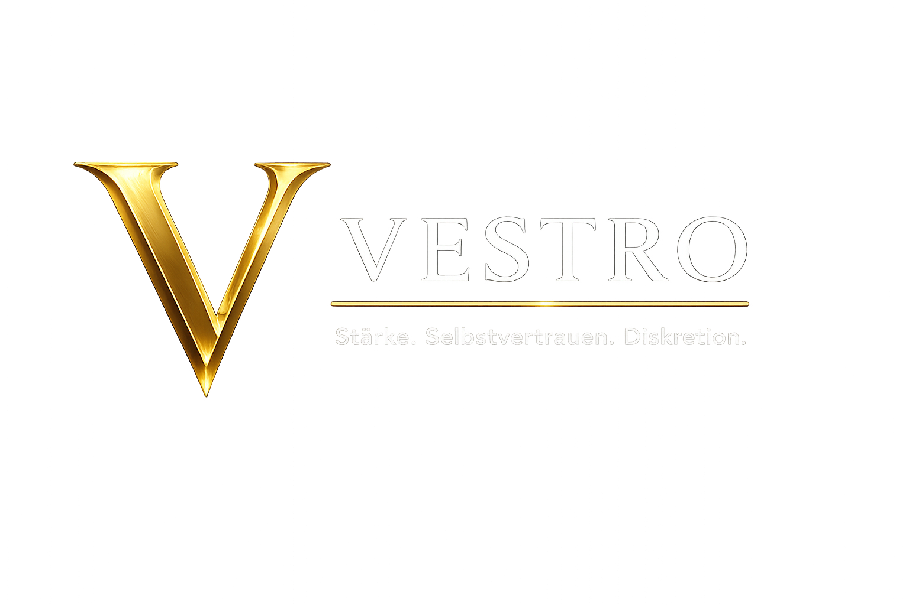

Männergesundheit
Für Potenz, Libido und Männergesundheit.

Bewährte Lösungen für Männer, die Veränderungen bei Potenz, Energie oder Selbstvertrauen diskret klären möchten — ruhig, vertraulich und ohne unnötige Aufmerksamkeit.
Erkennen Sie sich in einem oder mehreren dieser Punkte wieder?
Eine Veränderung wahrzunehmen bedeutet nicht, sich mit ihr abfinden zu müssen. Potenz, Libido und Selbstvertrauen können sich aus ganz unterschiedlichen Gründen verändern: Alter, Stress, Schlafmangel, Lebensstil, hormonelle Veränderungen oder andere individuelle Faktoren. Solche Veränderungen kommen deutlich häufiger vor, als viele Männer offen darüber sprechen.
Die gute Nachricht ist: Heute gibt es für nahezu jede Situation moderne Möglichkeiten und unterschiedliche Wege. Welche davon passend ist, hängt von den persönlichen Zielen, Erwartungen und der individuellen Ausgangslage ab. Für manche Männer reicht eine einfache und schnelle Lösung, andere bevorzugen einen umfassenderen und langfristigeren Ansatz.
Wichtig ist: Veränderungen müssen nicht bestimmen, wie Sie Ihr Leben erleben. Moderne Möglichkeiten erlauben es, den Weg zu wählen, der zur eigenen Situation passt.
Nicht jeder Mann sucht dieselbe Lösung. Für manche reicht eine schnelle und diskrete Möglichkeit mit bekannten Präparaten wie Viagra®, Cialis®, Levitra® oder Spedra®, die über unsere lizenzierten Partner und zugelassenen Online-Apotheken in Deutschland legal bestellt werden können. Andere möchten die Ursachen genauer verstehen und einen langfristigeren Ansatz wählen.
VestroDirect arbeitet mit geprüften und lizenzierten Online-Apotheken, telemedizinischen Zentren und spezialisierten Gesundheitsplattformen in Deutschland zusammen, die sich auf Männergesundheit, erektile Dysfunktion und die individuelle Betreuung von Patienten spezialisiert haben.
Die Hauptaufgabe von VestroDirect besteht darin, Sie bei der Lösung Ihres Problems zu unterstützen, indem wir Ihnen je nach Ihren persönlichen Zielen den Zugang zu passenden, erfahrenen und lizenzierten Partnern in Deutschland erleichtern. Das kann eine schnelle diskrete Lösung sein oder ein umfassenderer Ansatz mit ärztlicher Online-Beratung, Diagnostik und weiterer Begleitung.
VestroDirect bündelt Informationen zu digitalen medizinischen Angeboten und erleichtert den Zugang zu seriösen Anlaufstellen in Deutschland.
Für Potenz, Libido und Männergesundheit.
Geprüfte Online-Apotheken und Telemedizin.

Diskrete Beratung und geschützte Bestellung.

Einfach. Sicher. Online.
Seriöse Partnerangebote für medizinische Beratung, Rezeptservice und diskrete Unterstützung im Alltag.
Nein. VestroDirect verkauft keine Medikamente. Wir helfen Ihnen dabei, seriöse und lizenzierte Online-Anbieter in Deutschland zu finden.
Das hängt vom jeweiligen Anbieter und Ihrer medizinischen Situation ab. Unsere Partner informieren Sie während der Online-Beratung.
Ja. Unsere Partner arbeiten nach den geltenden Datenschutzbestimmungen und behandeln Ihre Angaben vertraulich.
Viele Partner bieten eine schnelle Online-Beratung an. Die Bearbeitungszeit hängt vom jeweiligen Anbieter ab.
Jeder Anbieter bietet unterschiedliche Leistungen, Preise und Behandlungsmöglichkeiten. So können Sie die passende Lösung auswählen.
Ja. Die Nutzung unserer Informationsplattform ist kostenlos.